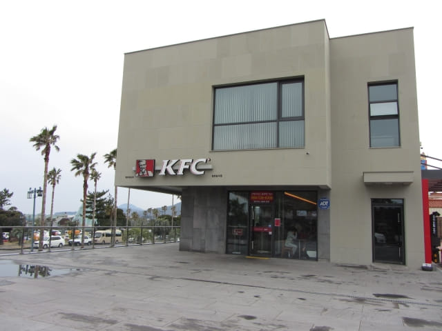
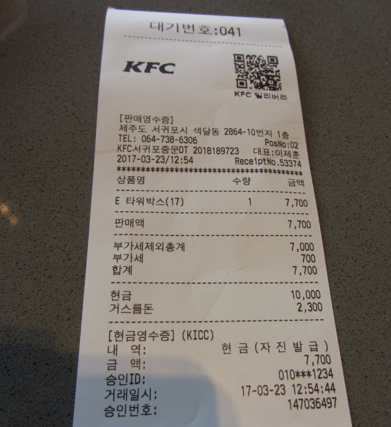

我們從東面入口進入天帝淵瀑布, 沿樹林間步道順序遊覽了第一段瀑布、第二段及第三段瀑布, 然後穿過橫躺中文川兩岸的仙臨橋 (七仙橋), 在瀑布展望台眺望第二段瀑布的美姿, 順道參觀了天帝樓及五福泉, 最後從天帝樓附近的南面出口離開, 就這樣把天帝淵瀑布徹底的遊了一遍。

從南面出口處離開天帝淵瀑布, 約中午十二時二十分, 便計劃往附近的景點逛逛, 順便找地方吃午餐。至於下午的行程, 看天氣會否好轉才決定吧。
如美植物園 (여미지식물원)
在天帝淵瀑布南面出口轉右走一會, 經過如美植物園的入口。如美植物園的入場費每位是9,000韓元, 太貴了! 在外面逛逛便算了。

信不信由你博物館 (믿거나 말거나 박물관)
離開如美植物園, 向前走一會, 馬路對面有一座外型古怪的建築物 – 信不信由你博物館。信不信由你博物館的入場費每位是9,000韓元, 實在太貴了! 同樣在外面逛逛便算了。老實說, 如果所有景點都進場參觀, 肯定破產!
其實信不信由你博物館外面也有不少地方可以遊覽, 足以流連半小時。
KFC 午餐
在信不信由你博物館外面四處閒逛, 附近四周都沒有餐廳, 想起剛才從如美植物園走來的時候, 經過路旁擺放的熟悉廣告公仔, 便掉頭循那方向走去。
拐了幾個彎, 便來到 KFC 快餐店, 看見沒有其他選擇, 便唯有在這裡吃午餐。
KFC 食物並不便宜, 叫了一客 Super Box 便算了, 都是炸雞之類的東西, 味道沒什麼特別, 只是應酬肚子的需要而已, 價錢是7,700韓元。

